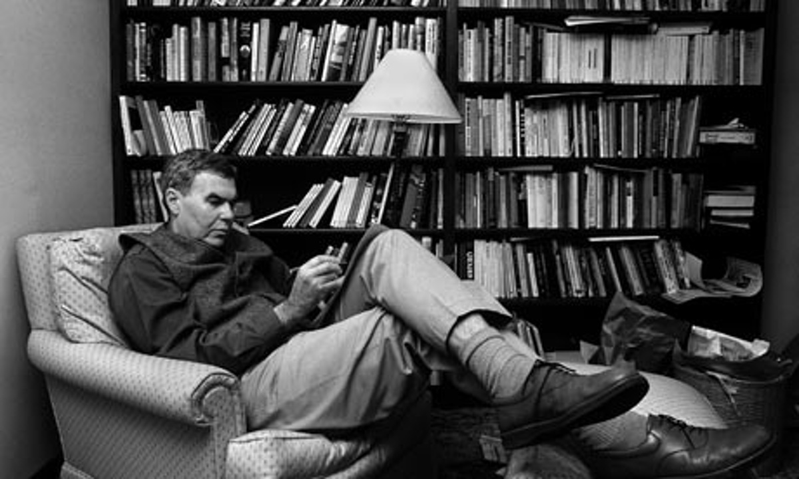

Raymond Carver

Here's a time line of Raymond Carver's life:
- 1938 - Born in Clatskanie, Oregon
- 1956 - graduating from Yakima High School
- 1957 - at age 19, he married 16-year-old Maryann Burk
- 1957 - Their daughter, Christine La Rae, was born in December 1957
- 1958 - Their second child, a boy named Vance Lindsay, was born a year later.
- 1961 - Carver's first published story, "The Furious Seasons",
- 1963 - Carver was accepted into the Iowa Writers' Workshop on a $1,000 fellowship for the 1963–1964 academic year.
- 1976 - Will You Please Be Quiet, Please? (first published 1976)
- 1977 - In November 1977 Carver met the poet Tess Gallagher
- 1981 - What We Talk About When We Talk About Love (1981)
- 1983 - Cathedral (1983)
- 1988 - On August 2, 1988, Carver died in Port Angeles, Washington, from lung cancer at the age of 50
LATE FRAGMENT
And did you get what
you wanted from this life, even so?
I did.
And what did you want?
To call myself beloved, to feel myself
beloved on the earth.